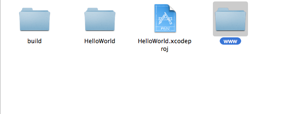
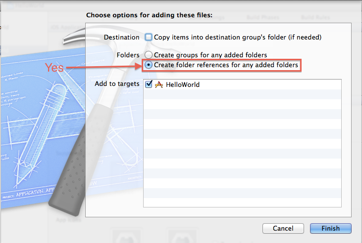

Getting Started with iOS
このガイドは、 Cordova のための開発環境セットアップ方法、またシンプルなアプリの動かし方を解説します。
ビデオチュートリアル:
1. 必要なもの
- Intel ベースの Mac OS X Lion (10.7)
- デバイスへのインストールに必要なもの:
- Apple iOS デバイス (iPhone, iPad, iPod Touch)
- iOS デベロッパー証明書
2. SDK と Cordova のインストール
- Mac App Store から Xcode をインストールします。
- Cordova の最新版をダウンロードし解凍します。これから lib/ios ディレクトリと一緒に作業を進めます。
3. 新規プロジェクトの作成
- Xcode を起動します
- メニューから File を選択します
- New を選択し、 New Project... を選択します
-
テンプレートのリストから Cordova-based Application を選択します

- Next ボタンをクリックします
-
"Product Name" と "Company Identifier" を記入します
重要！ "Use Automatic Reference Counting" のチェックボックスにチェックを入れないでください
- Next ボタンをクリックします
- 新しいアプリを保存する フォルダーを選択します
- Create ボタンをクリックし、プロジェクトを作成します
-
左上にある Run ボタンをクリックします。 ビルドが成功し、 iOS シミュレーターが起動します
a. iOS シミュレーターが、 www/index.html was not found と警告しているのが確認できるはずです。
b. これを修正するため、 www ディレクトリへのリファレンスをプロジェクトに追加する必要があります。

左側のサイドバーにある Project Navigator の中のプロジェクトアイコンの上で 右クリック し、 Show in Finder を選択します
-
フォルダー内 に、 www ディレクトリが確認できるはずです

-
重要！ www フォルダーを Xcode 4 に ドラッグ します。 アプリフォルダーには ドラッグしないでください 。 Xcode 4 にドラッグしてください。下の HelloWorld プロジェクトの例だと、 赤い四角の枠で囲ってある部分 にドラッグアンドドロップします。

- 正確に "www" フォルダーがドラッグアンドドロップされると、いくつかのオプションがある画面が表示されます
-
Create folder references for any added folders のラジオボタンを選択します

Finish ボタンをクリックします
4. Hello World の作成
- Xcode の Project Navigator にある www フォルダーを選択します
- index.html ファイルを選択します
-
<body>タグの後に<h1>Hello World</h1>と記述します
関連する JavaScript や CSS ファイルも追加することができます。
5A. シミュレーターへのデプロイ
- ツールバーにあるドロップダウンメニューから Active SDK を iOS version# Simulator に変更します
- プロジェクトウィンドウのツールバーにある Run ボタンをクリックします
5B. デバイスへのデプロイ
- "Supporting Files" グループの中にある [AppName]-Info.plist ([AppName]は作成したアプリの名前) を開きます
- BundleIdentifier を Apple から提供された Identifer 、または自分の Identifer に変更します。もし開発者ライセンスを持っている場合は、 Assistant に ここ からアクセスし、アプリを登録できます
- ツールバーにあるドロップダウンメニューから Active SDK を [DEVICENAME] に変更します。ここで、 [DEVICENAME] はデプロイしたいデバイスの名前です
-
プロジェクトウィンドウのツールバーにある Run ボタンをクリックします

終了
Xcode の外で HTML, CSS, JavaScript を www フォルダーに追加した場合も、追加したファイルは自動的に Xcode の中に取り込まれます。